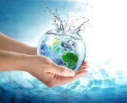
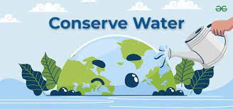
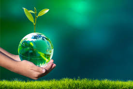
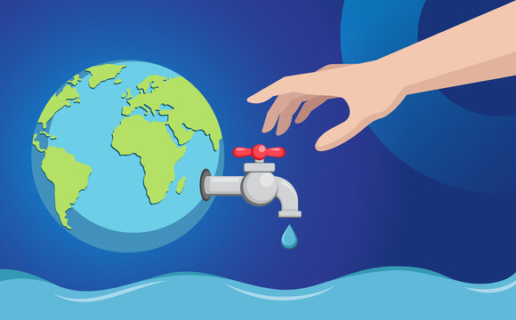

Welcome to our Water Wastage website, a digital hub dedicated to the preservation of our planet's most precious resource – water. In a world where clean water is becoming increasingly scarce, our collective responsibility to protect it has never been more critical. On this platform, we are committed to raising awareness about water wastage, its root causes, the far-reaching consequences, and the actionable steps we can take to mitigate it.
Water is the lifeblood of our ecosystems and an indispensable part of our daily lives. Yet, it is often squandered through thoughtless habits, leaky infrastructure, and the excessive use of water-intensive products. Our goal is to empower you with knowledge, inspiring you to adopt water-conservation practices in your daily routine, home, and community. Explore the causes and effects of water wastage, discover innovative solutions, and join the growing movement of responsible water stewardship.
Water is a finite resource, essential for life, and yet, we often take it for granted. Every time we leave the faucet running while brushing our teeth or let a leaky tap go unfixed, we contribute to the alarming issue of water wastage. It's time to be more responsible and mindful of our water consumption.
The Earth's water supply is not unlimited. Wasting water not only harms the environment but also deprives future generations of this precious resource. By fixing leaks, using water-saving appliances, and practicing conservation, we can make a significant impact in reducing water wastage.
Imagine a world where clean, fresh water becomes a luxury only a few can afford. The sad reality is that we're headed in that direction if we don't address water wastage urgently. Let's pledge to use water wisely, as if our future depends on it – because it truly does.
Water is life's elixir, and yet, we squander it every day. From long showers to overwatering lawns, our careless actions drain this finite resource. Conserving water is not just an environmental responsibility; it's a moral obligation to ensure a sustainable future for all living beings.
Water wastage not only strains our water supply but also increases energy consumption and the emission of greenhouse gases. By being more conscious of our water usage, we can reduce our carbon footprint and make a positive impact on the planet.
Each drop of water wasted is a drop less for someone in need. Around the world, millions suffer from water scarcity, while we let water flow away in our own homes. Let's show compassion by conserving water and using it wisely.
A single leaky faucet may seem inconsequential, but collectively, these small drips add up to a significant loss of water. Taking the time to repair leaks and adopting water-efficient practices can help us combat water wastage one drop at a time.
In many parts of the world, droughts are becoming more frequent and severe. It's a stark reminder of the consequences of water wastage. By making small changes in our daily routines, we can help safeguard water resources for a more sustainable future.
Water is essential for agriculture, industry, and our daily lives. When we waste water, we not only increase the cost of these vital services but also strain the ecosystems that depend on a healthy water balance. Let's value every drop and use it wisely.
Water is a source of life, and it's time to treat it with the respect it deserves. Let's commit to reducing water wastage and conserving this precious resource for the well-being of our planet and all its inhabitants.
